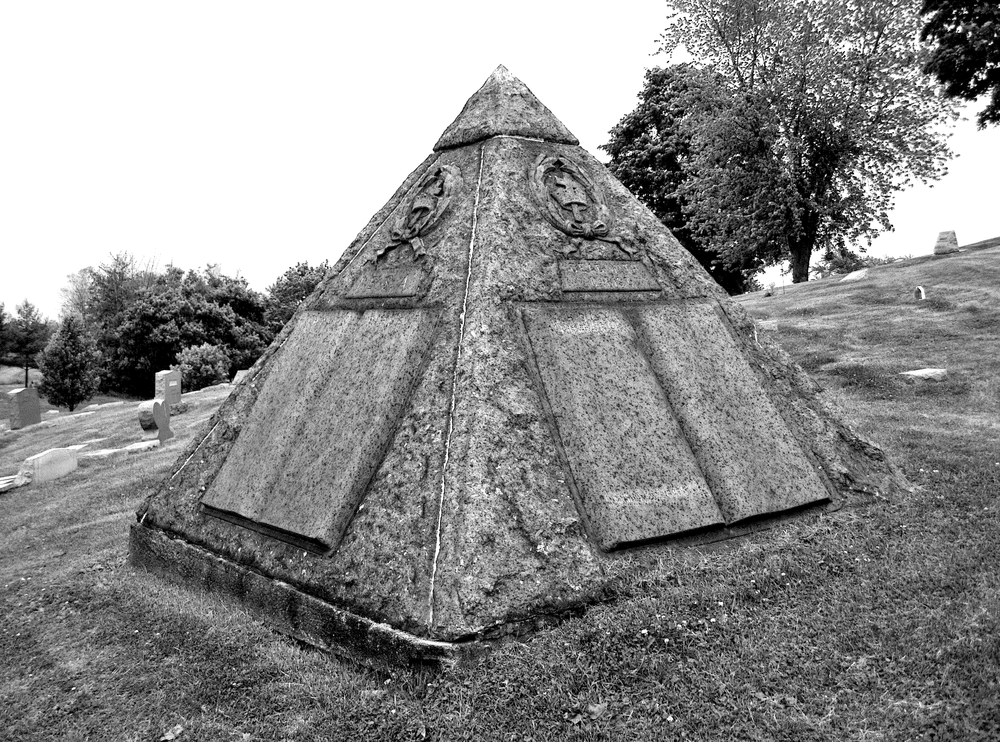

They have work camps where people in the Jehova’s Witnesses gladly subscribe too where you spend ungodly hours printing magazines and adjusted bibles for zero wages except food and a bunkbed and if you ever ask questions about the origin of the religion you will be frowned upon and they will not tell you anything. Luckily for me my parents divorced and I had enough time in the “real world” to realize that the Jehova’s Witnesses are a cult and that their ways are borderline criminal. I also found out that upon the grave of the founder, Charles Taze Russell, rests a masonic, pyramid shaped stone with an eye at the top and that the Jehova’s Witnesses made several attempts of predicting the resurrection of Christ and failed miserably. They make it seem as if the religion is really old and founded, but in reality, it was conceived in 1872 and started booming in 1945; the organization of the Jehovah’s Witnesses makes a lot of money from its members.
This is just one example of religion gone rogue. In this thesis I would like to explore how Christian religion changed over time, where some traditions come from and what the role of nature is and how we separated from it; what is the spirit of Christ and what are some different ways we can achieve self-actualization and explore a spiritual conduct in order to manifest in space. What is the role of ritual and whether some are better than others or if intentionality is more important.

Watchtower 1910

Charles Taze Russell
1852 - 1916 United Cemeteries
Pittsburgh, Allegheny County,
Pennsylvania, USA
1852 - 1916 United Cemeteries
Pittsburgh, Allegheny County,
Pennsylvania, USA